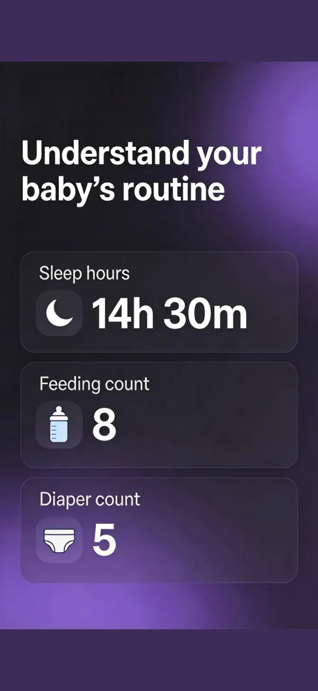

No digging through tabs or forms while holding a baby.
Now live on the App Store
Baby tracking that still makes sense at 3am.
When your brain is foggy and one hand is busy, BabyPulse Pro helps you log feeds, sleep, and diapers fast. Then it turns the chaos into routines you can actually trust.
- Fast sleep, feed, and diaper logging
- Daily patterns and premium insights
- Built for tired parents, not spreadsheets
Turn scattered events into a timeline and patterns you can follow.
Use reminders and premium insights to reduce guesswork.
Why it converts
It solves the real parent problem: you are tired, busy, and need the answer fast.
Quick logging without friction
Sleep timers, feeding records, and diaper changes are built to be captured with minimal taps.
Patterns, not just raw entries
Timelines, summaries, and premium stats help parents notice routines instead of piecing everything together manually.
Helpful, calm reminders
Feed reminders and sleep check-ins keep the day moving without turning the app into noise.
Made for the newborn stage
BabyPulse Pro is built around the moments that matter most in the first months: the next feed, the last diaper, the current nap, and whether the day is feeling normal.
App Screens
A calmer interface for a noisy part of life.

For parents who want clarity
Stop reconstructing the day from memory.
BabyPulse Pro gives you a clean record of feeding, sleep, and diaper changes, so you can answer the important questions quickly and feel more in control.
Best for
Newborn routines
Core actions
Sleep · Feed · Diaper
Upgrade path
Insights + reminders
Ready to try it?
Download BabyPulse Pro today.
Built for parents who need less friction, more clarity, and a better way to keep the day on track.